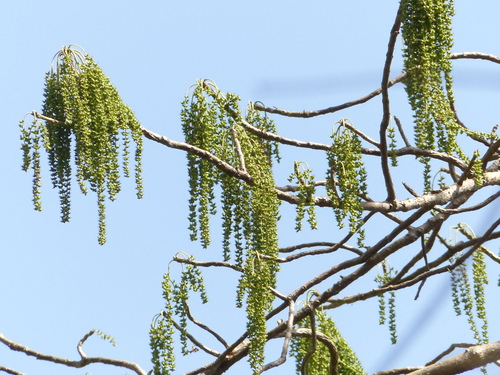

Tetramelaceae
Baing or Binuang Family
Tetramelaceae is a small family of flowering plants in the order Cucurbitales, containing just two genera (Tetrameles and Octomeles) and two species of large, fast-growing trees native to Southeast Asia, Malesia, northeastern Australia, and surrounding islands. They are notable components of tropical forests, particularly in riparian and disturbed areas.
Overview
The Tetramelaceae family consists of only two species: Tetrameles nudiflora and Octomeles sumatrana. Both are massive trees, often developing large buttress roots, and are known for their rapid growth rates. They typically inhabit lowland tropical forests, with Octomeles often found as a pioneer species along riverbanks and in disturbed areas, while Tetrameles prefers seasonal climates and is deciduous.
These trees are dioecious, meaning individual trees bear either male or female flowers, but not both. Pollination is thought to be primarily by wind or possibly insects attracted to the nectar produced by male flowers. The numerous, tiny seeds are dispersed by wind and water, contributing to their success as pioneer species in suitable habitats.
Economically, the timber of both species is used locally for construction, canoes, packing cases, and plywood, although it is generally soft and not very durable. Ecologically, they play a role in forest regeneration and provide habitat structure in their native ecosystems.
Quick Facts
- Scientific Name: Tetramelaceae
- Common Name: Baing Family, Binuang Family (often referred by genus/species names)
- Number of Genera: 2 (Tetrameles, Octomeles)
- Number of Species: 2
- Distribution: Southeast Asia (India, Indochina, southern China), Malesia (Malay Peninsula, Indonesia, Philippines, New Guinea), northeastern Australia, Solomon Islands.
- Evolutionary Group: Eudicots - Rosids - Cucurbitales
Key Characteristics
Growth Form and Habit
Members of Tetramelaceae are exclusively large to very large trees, often reaching heights of 40-60 meters or more. They frequently develop prominent buttress roots at the base. Tetrameles nudiflora is deciduous, shedding its leaves during the dry season, while Octomeles sumatrana is typically evergreen or briefly deciduous.
Leaves
The leaves are simple, alternate along the stem, and relatively large. They are typically broadly ovate to cordate (heart-shaped) with palmate venation (major veins radiating from the base). Leaf margins are usually entire or slightly toothed. Stipules (small leaf-like appendages at the base of the petiole) are present but are caducous, meaning they fall off early as the leaf expands.
Inflorescence
The plants are dioecious. Inflorescences are typically borne on leafless branches before or as new leaves emerge. Male flowers are arranged in long, pendulous, branched panicles. Female flowers are borne in simpler, unbranched, pendulous spikes or racemes which elongate significantly as the fruits develop.
Flowers
Flowers are small, inconspicuous, and unisexual. A key feature is that they are apetalous (lacking petals).
- Calyx: Composed of 4 (in Tetrameles) or 6-8 (in Octomeles) small sepals.
- Corolla: Absent.
- Androecium (Male Flowers): Stamens are equal in number to the sepals and alternate with them (4 in Tetrameles, 6-8 in Octomeles). A rudimentary pistil (pistillode) may be present.
- Gynoecium (Female Flowers): A single inferior ovary composed of 4-8 fused carpels, forming a single chamber (unilocular) with numerous ovules. Styles are distinct, equal in number to the carpels. Rudimentary stamens (staminodes) may be present.
Fruits and Seeds
The fruit is a dry, many-seeded capsule that opens by pores or slits near the apex (top), allowing the seeds to escape. The persistent styles often remain on the mature fruit.
Seeds are numerous, tiny, and flattened or slightly winged, adapted for dispersal by wind and potentially water, especially for the riverine Octomeles.
Field Identification
Identifying Tetramelaceae trees in the field relies on recognizing their distinctive combination of size, leaf shape, and reproductive structures (if present):
Primary Identification Features
- Very Large Tree Habit: Look for massive trees, often significantly larger than surrounding vegetation.
- Buttress Roots: Prominent plank-like buttresses at the base are common and often conspicuous.
- Simple, Alternate, Cordate/Ovate Leaves: Large, heart-shaped or broadly egg-shaped leaves arranged alternately on the twigs.
- Pendulous Inflorescences/Infructescences: Look for long, hanging spikes or panicles of small flowers or developing capsules, often appearing on bare branches.
- Apetalous Flowers: If flowers are closely examined (difficult due to height), the lack of petals is characteristic.
- Capsular Fruit: Small, urn-shaped capsules opening at the top, borne on the hanging spikes.
Secondary Identification Features
- Palmate Venation: Major leaf veins radiating from the point of petiole attachment.
- Dioecious Nature: Individual trees will only bear male flowers or female flowers/fruits, not both.
- Habitat: Octomeles is strongly associated with riverbanks and disturbed lowland areas; Tetrameles often found in areas with more seasonal rainfall.
- Deciduous vs. Evergreen: Tetrameles is distinctly deciduous; Octomeles is largely evergreen.
Seasonal Identification Tips
- Dry Season: Tetrameles will be leafless, potentially making flowers or developing fruits on bare branches more visible. Octomeles generally retains leaves.
- Flowering/Fruiting Period: Often occurs towards the end of the dry season or beginning of the wet season, coinciding with leaf fall or emergence of new leaves. The long, hanging clusters of fruits can persist for some time.
- Wet Season: Trees will be in full leaf, making leaf shape and arrangement key features.
Common Confusion Points
Distinguishing from other large tropical trees requires attention to the combination of features:
- Other Buttressed Trees (e.g., some Ficus, Sterculiaceae, Fabaceae): Check leaf arrangement (alternate in Tetramelaceae), leaf shape (simple, cordate/ovate), and especially flower/fruit structure (Tetramelaceae lacks petals and has unique hanging inflorescences/capsules).
- Large-leaved Trees (e.g., some Malvaceae, Moraceae): Again, focus on the combination: alternate simple leaves + apetalous flowers + inferior ovary + capsular fruit + dioecy + pendulous inflorescences.
Field Guide Quick Reference
Look For:
- Massive tree size
- Large buttress roots
- Alternate, simple, cordate/ovate leaves
- Pendulous spikes/panicles (flowers/fruits)
- Small, apetalous flowers
- Urn-shaped capsules opening at top
- Dioecious (male or female trees)
Key Variations:
- Tetrameles: Deciduous, 4 sepals/stamens
- Octomeles: Evergreen/semi-deciduous, 6-8 sepals/stamens, often riparian
- Leaf shape can vary slightly
- Buttress size varies
Notable Examples
As the family contains only two species, both are notable examples:

Tetrameles nudiflora
Baing, Thitpok, False Hemp Tree
A huge deciduous tree found from India through Southeast Asia to Malesia and NE Australia. It prefers monsoon climates and sheds its large, heart-shaped leaves in the dry season. Flowers appear on bare branches. Known for its massive buttresses and soft, lightweight wood used locally.

Octomeles sumatrana
Binuang, Erima
An enormous, fast-growing, evergreen or semi-deciduous tree native to Malesia (Philippines, Indonesia, New Guinea) and the Solomon Islands. It is a pioneer species, often dominating riverbanks and floodplains. Its timber is soft and used for plywood, canoes, and general construction where durability is not critical.
Phylogeny and Classification
Tetramelaceae is placed within the order Cucurbitales, a group within the rosid clade of eudicots. This order also includes well-known families like Cucurbitaceae (gourds and melons) and Begoniaceae (begonias). Molecular studies confirm Tetramelaceae's placement here and indicate its closest relative is the small family Datiscaceae.
The family represents an interesting lineage of large, wind-pollinated trees within an order otherwise dominated by herbs, vines, and shrubs, many of which are insect-pollinated and have more conspicuous flowers. The evolution of dioecy, apetalous flowers, and numerous tiny, wind-dispersed seeds are key features of this family.
Position in Plant Phylogeny
- Kingdom: Plantae
- Clade: Angiosperms (Flowering plants)
- Clade: Eudicots
- Clade: Rosids
- Order: Cucurbitales
- Family: Tetramelaceae
Evolutionary Significance
Tetramelaceae, despite its small size, holds evolutionary interest due to:
- Phylogenetic Position: Its placement within Cucurbitales highlights the diversity of life forms (massive trees vs. herbs/vines) that can evolve within a single order.
- Adaptations for Size and Growth: Represents a lineage that evolved towards massive size and rapid growth, likely adaptations for competing in tropical forest canopies or colonizing open areas.
- Reproductive Strategy: The combination of dioecy, apetalous flowers, wind pollination (likely), and numerous tiny, wind/water-dispersed seeds is a specialized syndrome contrasting with many relatives in the order.
- Link to Datiscaceae: The sister relationship between the giant trees of Tetramelaceae and the herbs of Datiscaceae provides a case study for major shifts in growth form during evolution.